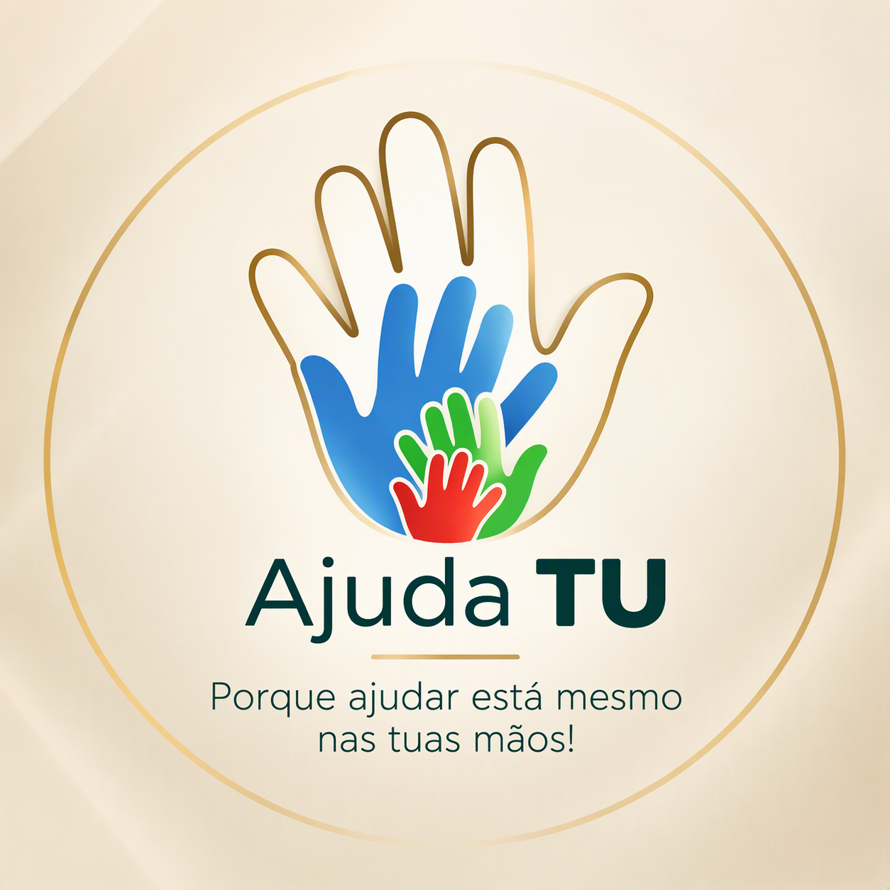

Aura & Magia
Artigos Esotéricos
Espaço dedicado a artigos relacionados com espiritualidade, bem-estar e desenvolvimento pessoal.
Conhecer parceiro →OKAN · DESENVOLVIMENTO HUMANO INTEGRAL
Juntos por um mundo mais humano.
O Portal OKAN acredita no valor da colaboração, na partilha de conhecimento e na criação de projetos capazes de gerar impacto positivo. Conheça os parceiros que fazem parte deste ecossistema.
Artigos Esotéricos
Espaço dedicado a artigos relacionados com espiritualidade, bem-estar e desenvolvimento pessoal.
Conhecer parceiro →
Porque ajudar está mesmo nas tuas mãos!
Projeto parceiro dedicado à colaboração, partilha e desenvolvimento de iniciativas com impacto positivo na comunidade.
Conhecer parceiro →
Pense. Crie. Imprima.
Parceiro em Projetos de Tecnologia, desenvolvimento de sites, logmarcas e impressão 3D. Transformação de ideias em negócios, combinando criatividade, tecnologia e produção digital.
Conhecer parceiro →“Diferentes conhecimentos, experiências e ideias podem transformar-se em projetos com propósito.”
Os endereços oficiais dos parceiros serão adicionados a esta página para permitir acesso direto aos respetivos projetos, redes sociais e canais de contacto.
Voltar ao Portal